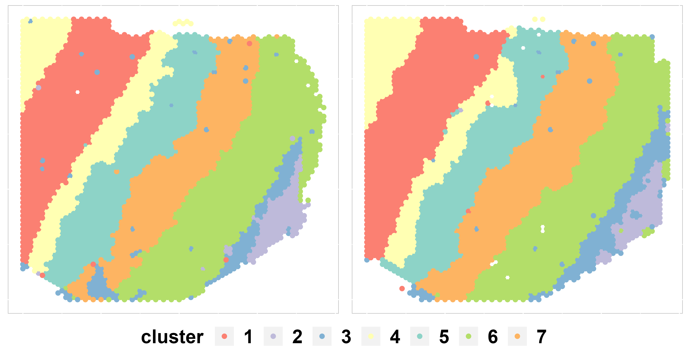
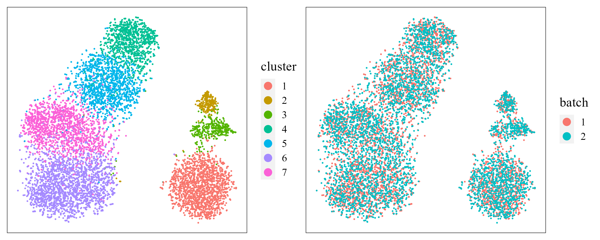

iSC.MEB: DLPFC Data Analysis
Xiao Zhang
2022-12-15
Source:vignettes/iSC.MEB.DLPFC.Rmd
iSC.MEB.DLPFC.RmdIntrduction
This vignette introduces the iSC.MEB workflow for the
analysis of the DLPFC dataset Maynard K. et
al, 2021, which contains the spatial topography of gene expression
from 12 human postmortem DLPFC tissue sections generated by using the
10x Genomics Visium platform. The workflow consists of three steps
- Independent preprocessing and model setting
- Integrated clustering using
iSC.MEBmodel - Downstream analysis (i.e. visualization of clusters and embeddings)
We demonstrate the use of iSC.MEB to a subset of the
DLPFC data after filter that are here,
which can be downloaded to the current working path by the following
command:
githubURL <- "https://github.com/XiaoZhangryy/iSC.MEB/blob/main/vignettes_data/DLPFC.rda?raw=true"
download.file(githubURL, "DLPFC.rda", mode = "wb")The package can be loaded with the command:
Then load datasets to R
load("DLPFC.rda")Fit an iSC.MEB model
First, we view the the spatial transcriptomics data with Visium platform.
seuList ## a list including two Seurat object
#> $`151507`
#> An object of class Seurat
#> 2000 features across 4226 samples within 1 assay
#> Active assay: RNA (2000 features, 0 variable features)
#>
#> $`151508`
#> An object of class Seurat
#> 2000 features across 4384 samples within 1 assay
#> Active assay: RNA (2000 features, 0 variable features)Prepare the iSC.MEB Object.
Then, we can create a iSCMEBObj object to prepare for
iSC.MEB models. And next, we performe create adjacency
matrix, dimensionality reduction and set model setting steps in
turn.
iSCMEBObj <- CreateiSCMEBObject(seuList = seuList, verbose = FALSE, premin.spots = 0, postmin.spots = 0)
## check the number of genes/features after filtering step
iSCMEBObj@seulist
#> $`151507`
#> An object of class Seurat
#> 2000 features across 4226 samples within 1 assay
#> Active assay: RNA (2000 features, 2000 variable features)
#>
#> $`151508`
#> An object of class Seurat
#> 2000 features across 4384 samples within 1 assay
#> Active assay: RNA (2000 features, 2000 variable features)
## Add adjacency matrix list for a iSCMEBObj object to prepare for iSC.MEB model fitting.
iSCMEBObj <- CreateNeighbors(iSCMEBObj, platform = "Visium")
## run PCA to get low dimensional embeddings
iSCMEBObj <- runPCA(iSCMEBObj, npcs = 15, pca.method = "APCA")
## Add a model setting in advance for an iSCMEBObj object. verbose = TRUE helps outputing the
## information in the algorithm.
iSCMEBObj <- SetModelParameters(iSCMEBObj, verbose = TRUE)Fit iSC.MEB
For function iSCMEB, users can specify the number of
clusters K or set K to be an integer vector by
using modified MBIC(BIC) to determine K. Here, we use
user-specified number of clusters.
### Given K
iSCMEBObj <- iSCMEB(iSCMEBObj, K = 7)
#> fitting ...
#>
|
| | 0%
|
|=================================== | 50%
|
|======================================================================| 100%
#> Finish variable initialization
#> K = 7, iter = 2, loglik= -143673.140702, dloglik=0.999933
#> K = 7, iter = 3, loglik= -135584.966524, dloglik=0.056296
#> K = 7, iter = 4, loglik= -130922.056202, dloglik=0.034391
#> K = 7, iter = 5, loglik= -127348.034983, dloglik=0.027299
#> K = 7, iter = 6, loglik= -124686.996633, dloglik=0.020896
#> K = 7, iter = 7, loglik= -122764.719220, dloglik=0.015417
#> K = 7, iter = 8, loglik= -121388.856896, dloglik=0.011207
#> K = 7, iter = 9, loglik= -120372.623719, dloglik=0.008372
#> K = 7, iter = 10, loglik= -119594.151740, dloglik=0.006467
#> K = 7, iter = 11, loglik= -118978.326627, dloglik=0.005149
#> K = 7, iter = 12, loglik= -118476.812547, dloglik=0.004215
#> K = 7, iter = 13, loglik= -118053.111872, dloglik=0.003576
#> K = 7, iter = 14, loglik= -117697.998012, dloglik=0.003008
#> K = 7, iter = 15, loglik= -117402.318720, dloglik=0.002512
#> K = 7, iter = 16, loglik= -117156.949410, dloglik=0.002090
#> K = 7, iter = 17, loglik= -116959.900276, dloglik=0.001682
#> K = 7, iter = 18, loglik= -116787.632145, dloglik=0.001473
#> K = 7, iter = 19, loglik= -116657.224113, dloglik=0.001117
#> K = 7, iter = 20, loglik= -116544.747450, dloglik=0.000964
#> K = 7, iter = 21, loglik= -116450.350990, dloglik=0.000810
#> K = 7, iter = 22, loglik= -116369.634045, dloglik=0.000693
#> K = 7, iter = 23, loglik= -116289.419857, dloglik=0.000689
#> K = 7, iter = 24, loglik= -116184.897306, dloglik=0.000899
#> K = 7, iter = 25, loglik= -116131.167896, dloglik=0.000462The function iSCMEB will automatically choose the
optimal path by the criteria specified in setting model
parameters step. User can slao using function SelectModel
to select model.
iSCMEBObj <- SelectModel(iSCMEBObj)Evaluate performance
The function idents can extract the labels provided by
iSC.MEB method. Therefore, we can evaluate the clustering
performance by some metrics, such as ARI.
LabelList <- lapply(iSCMEBObj@seulist, function(seu) seu@meta.data$layer_guess_reordered)
ARI <- function(x, y) mclust::adjustedRandIndex(x, y)
ari_sections <- sapply(1:2, function(i) ARI(idents(iSCMEBObj)[[i]], LabelList[[i]]))
ari_all <- ARI(unlist(idents(iSCMEBObj)), unlist(LabelList))
print(ari_sections)
#> [1] 0.5425156 0.5096009
print(ari_all)
#> [1] 0.520498Visualization
Spatial scatter plot
In addition to metrics, we can use some visualization functions to measure the clustering results, such as the spatial scatter plot.
cols = c("#fb8072", "#bebada", "#80b1d3", "#ffffb3", "#8dd3c7", "#b3de69", "#fdb462")
p1 <- SpaHeatMap(iSCMEBObj, item = "cluster", plot_type = "Scatter", nrow.legend = 1, layout.dim = c(1,
2), no_axis = TRUE, cols = cols)
p1
t-SNE plot.
Next, user can visualize the inferred embeddings for biological effects between cell/domain types using two components from either tSNE or UMAP. Here, wo demonstrate the clustering and batch remove performance by t-SNE plot.
iSCMEBObj <- CalculateTSNE(iSCMEBObj, reduction = "iSCMEB", n_comp = 2)
library(patchwork)
p2 <- LowEmbedPlot(iSCMEBObj, item = "cluster", reduction = "TSNE2", point_size = 0.3)
p3 <- LowEmbedPlot(iSCMEBObj, item = "batch", reduction = "TSNE2", point_size = 0.3)
p2 + p3
Session information
sessionInfo()
#> R version 4.1.3 (2022-03-10)
#> Platform: x86_64-w64-mingw32/x64 (64-bit)
#> Running under: Windows 10 x64 (build 19045)
#>
#> Matrix products: default
#>
#> locale:
#> [1] LC_COLLATE=English_United States.1252
#> [2] LC_CTYPE=English_United States.1252
#> [3] LC_MONETARY=English_United States.1252
#> [4] LC_NUMERIC=C
#> [5] LC_TIME=English_United States.1252
#> system code page: 936
#>
#> attached base packages:
#> [1] stats graphics grDevices utils datasets methods base
#>
#> other attached packages:
#> [1] patchwork_1.1.2 SeuratObject_4.1.3 Seurat_4.2.1 iSC.MEB_1.0
#> [5] ggplot2_3.4.0 gtools_3.9.3
#>
#> loaded via a namespace (and not attached):
#> [1] utf8_1.2.2 spatstat.explore_3.0-5
#> [3] reticulate_1.26 tidyselect_1.2.0
#> [5] htmlwidgets_1.5.4 grid_4.1.3
#> [7] BiocParallel_1.28.3 Rtsne_0.16
#> [9] ScaledMatrix_1.2.0 munsell_0.5.0
#> [11] codetools_0.2-18 ragg_1.2.4
#> [13] ica_1.0-3 future_1.29.0
#> [15] miniUI_0.1.1.1 withr_2.5.0
#> [17] spatstat.random_3.0-1 colorspace_2.0-3
#> [19] progressr_0.11.0 Biobase_2.54.0
#> [21] highr_0.9 knitr_1.41
#> [23] rstudioapi_0.14 stats4_4.1.3
#> [25] SingleCellExperiment_1.16.0 ROCR_1.0-11
#> [27] ggsignif_0.6.4 tensor_1.5
#> [29] listenv_0.8.0 labeling_0.4.2
#> [31] MatrixGenerics_1.6.0 GenomeInfoDbData_1.2.7
#> [33] polyclip_1.10-4 farver_2.1.1
#> [35] rprojroot_2.0.3 parallelly_1.32.1
#> [37] vctrs_0.5.0 generics_0.1.3
#> [39] xfun_0.35 R6_2.5.1
#> [41] GenomeInfoDb_1.30.1 ggbeeswarm_0.6.0
#> [43] rsvd_1.0.5 bitops_1.0-7
#> [45] spatstat.utils_3.0-1 cachem_1.0.6
#> [47] DelayedArray_0.20.0 assertthat_0.2.1
#> [49] promises_1.2.0.1 scales_1.2.1
#> [51] beeswarm_0.4.0 gtable_0.3.1
#> [53] beachmat_2.10.0 globals_0.16.1
#> [55] goftest_1.2-3 rlang_1.0.6
#> [57] systemfonts_1.0.4 splines_4.1.3
#> [59] rstatix_0.7.1 lazyeval_0.2.2
#> [61] spatstat.geom_3.0-3 broom_1.0.1
#> [63] yaml_2.3.6 reshape2_1.4.4
#> [65] abind_1.4-5 backports_1.4.1
#> [67] httpuv_1.6.6 tools_4.1.3
#> [69] ellipsis_0.3.2 jquerylib_0.1.4
#> [71] RColorBrewer_1.1-3 BiocGenerics_0.40.0
#> [73] ggridges_0.5.4 Rcpp_1.0.9
#> [75] plyr_1.8.8 sparseMatrixStats_1.6.0
#> [77] zlibbioc_1.40.0 purrr_0.3.5
#> [79] RCurl_1.98-1.9 ggpubr_0.4.0
#> [81] deldir_1.0-6 viridis_0.6.2
#> [83] pbapply_1.5-0 cowplot_1.1.1
#> [85] S4Vectors_0.32.4 zoo_1.8-11
#> [87] SummarizedExperiment_1.24.0 ggrepel_0.9.2
#> [89] cluster_2.1.4 fs_1.5.2
#> [91] magrittr_2.0.3 GiRaF_1.0.1
#> [93] data.table_1.14.4 scattermore_0.8
#> [95] lmtest_0.9-40 RANN_2.6.1
#> [97] fitdistrplus_1.1-8 matrixStats_0.62.0
#> [99] mime_0.12 evaluate_0.18
#> [101] xtable_1.8-4 mclust_6.0.0
#> [103] IRanges_2.28.0 gridExtra_2.3
#> [105] compiler_4.1.3 scater_1.22.0
#> [107] tibble_3.1.8 KernSmooth_2.23-20
#> [109] htmltools_0.5.3 later_1.3.0
#> [111] tidyr_1.2.1 DBI_1.1.3
#> [113] formatR_1.12 MASS_7.3-58.1
#> [115] Matrix_1.5-1 car_3.1-1
#> [117] cli_3.4.1 parallel_4.1.3
#> [119] igraph_1.3.5 DR.SC_2.9
#> [121] GenomicRanges_1.46.1 pkgconfig_2.0.3
#> [123] pkgdown_2.0.6 sp_1.5-1
#> [125] plotly_4.10.1 scuttle_1.4.0
#> [127] spatstat.sparse_3.0-0 vipor_0.4.5
#> [129] bslib_0.4.1 XVector_0.34.0
#> [131] CompQuadForm_1.4.3 stringr_1.4.1
#> [133] digest_0.6.30 sctransform_0.3.5
#> [135] RcppAnnoy_0.0.20 spatstat.data_3.0-0
#> [137] rmarkdown_2.18 leiden_0.4.3
#> [139] uwot_0.1.14 DelayedMatrixStats_1.16.0
#> [141] shiny_1.7.3 lifecycle_1.0.3
#> [143] nlme_3.1-160 jsonlite_1.8.3
#> [145] carData_3.0-5 BiocNeighbors_1.12.0
#> [147] desc_1.4.2 viridisLite_0.4.1
#> [149] fansi_1.0.3 pillar_1.8.1
#> [151] lattice_0.20-45 fastmap_1.1.0
#> [153] httr_1.4.4 survival_3.4-0
#> [155] glue_1.6.2 png_0.1-7
#> [157] stringi_1.7.8 sass_0.4.2
#> [159] textshaping_0.3.6 BiocSingular_1.10.0
#> [161] memoise_2.0.1 dplyr_1.0.10
#> [163] irlba_2.3.5.1 future.apply_1.10.0